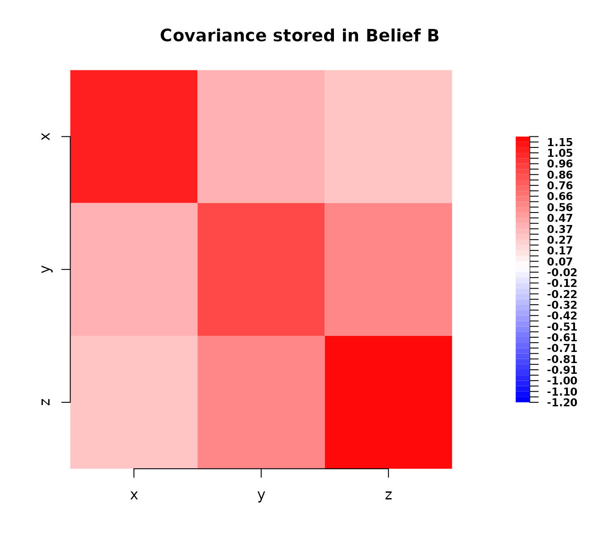
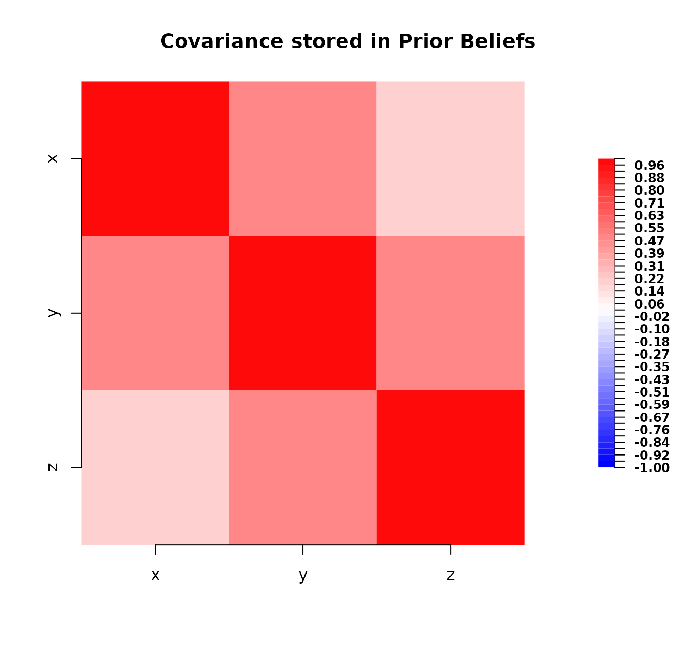
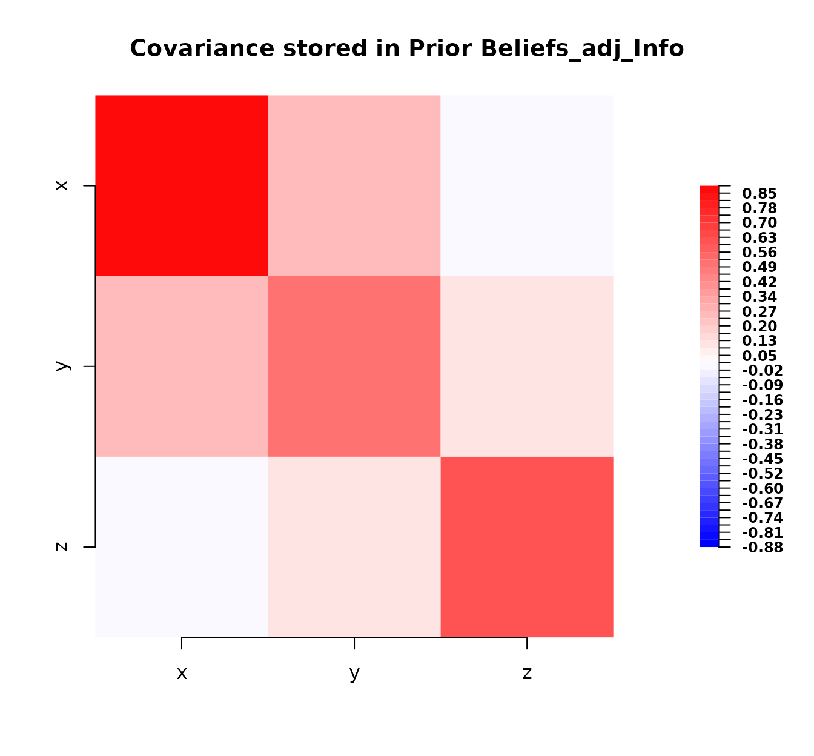

Hellinger distances between belief specifications
HellingerDistances.RmdThis vignette assumes familiarity with the bl object
class introduced in the “Introduction to the
BayesLinearKinematics package” vignette.
Note that this vignette was created using R version R version 4.5.1
(2025-06-13) and the BayesLinearKinematics package version
0.2.13.
Introduction
In Bayes linear analysis, we represent beliefs using expectations and
covariances. Sometimes, we want to quantify how “different” two belief
specifications are. The Hellinger distance is a metric used to measure
the similarity between two probability distributions. While a
bl object only stores the first two moments (expectation
and covariance), we can calculate the Hellinger distance between the
multivariate normal distributions that share these moments. This
provides a useful measure of discrepancy between two belief
specifications encapsulated in bl objects.
The squared Hellinger distance ranges between 0 and 1 where 0 indicates the distributions (and thus the expectations and covariances) are identical and 1 indicates maximal difference.
This vignette demonstrates how to use the
hellinger_squared() function in the
BayesLinearKinematics package to calculate this
distance.
Defining the Squared Hellinger Distance (Normal Case)
The hellinger_squared() function calculates the distance
between two bl objects x and y by
assuming they represent multivariate normal distributions
and
respectively with means
(from x@expectation, y@expectation) and
covariance matrices
(from x@covariance, y@covariance).
Univariate Case: If the bl objects represent beliefs
about a single variable
(,
),
the squared Hellinger distance is:
Multivariate Case: If the bl objects represent beliefs
about multiple variables
(,
),
the squared Hellinger distance is:
where
denotes the determinant of a matrix and
denotes the matrix inverse (or generalised inverse ginv as used in the
function for numerical stability).
Calculating Distance Between Two Belief Specifications
Let’s define two different belief specifications for the same set of variables , and . We can then use hellinger_squared() to quantify how much these beliefs differ.
First, we define belief_A perhaps representing an initial assessment.
# Define first belief specification
belief_A <- bl(
name = "Belief A",
varnames = c("x", "y", "z"),
expectation = c(1, 2, 3),
covariance = matrix(
c(
1.0, 0.5, 0.2,
0.5, 1.0, 0.5,
0.2, 0.5, 1.0
),
nrow = 3, ncol = 3
)
)
belief_A
#> Belief A
#>
#> Expectation:
#>
#> x 1
#> y 2
#> z 3
#>
#> Covariance:
#>
#> x y z
#> x 1.0 0.5 0.2
#> y 0.5 1.0 0.5
#> z 0.2 0.5 1.0
plot(belief_A)
Now, we define belief_B representing an alternative
assessment perhaps from a different expert or model.
# Define second belief specification (different expectation and covariance)
belief_B <- bl(
name = "Belief B",
varnames = c("x", "y", "z"),
expectation = c(1.2, 2.1, 2.9), # Slightly different means
covariance = matrix(
c(
1.1, 0.4, 0.3, # Slightly different covariance
0.4, 0.9, 0.6,
0.3, 0.6, 1.2
),
nrow = 3, ncol = 3
)
)
belief_B
#> Belief B
#>
#> Expectation:
#>
#> x 1.2
#> y 2.1
#> z 2.9
#>
#> Covariance:
#>
#> x y z
#> x 1.1 0.4 0.3
#> y 0.4 0.9 0.6
#> z 0.3 0.6 1.2
plot(belief_B)
Now, we calculate the squared Hellinger distance between
belief_A and belief_B.
# Calculate the squared Hellinger distance
# x: The first 'bl' object.
# y: The second 'bl' object.
dist_A_B <- hellinger_squared(x = belief_A, y = belief_B)
# Print the result
cat(paste(
"Squared Hellinger distance between Belief A and Belief B:",
round(dist_A_B, 4)
))
#> Squared Hellinger distance between Belief A and Belief B: 0.0182The resulting value (likely small but non-zero) quantifies the difference between these two belief specifications under the normality assumption. A value closer to 0 indicates higher similarity.
Let’s also quickly check the univariate case.
# Univariate beliefs
belief_X1 <- bl(name = "X1", varnames = "x",
expectation = 1, covariance = matrix(1))
belief_X2 <- bl(name = "X2", varnames = "x",
expectation = 1.5, covariance = matrix(1.2))
dist_X1_X2 <- hellinger_squared(belief_X1, belief_X2)
cat(paste(
"Squared Hellinger distance between Belief X1 and Belief X2:",
round(dist_X1_X2, 4)
))
#> Squared Hellinger distance between Belief X1 and Belief X2: 0.03
# Check distance to self (should be 0)
dist_X1_X1 <- hellinger_squared(belief_X1, belief_X1)
cat(paste(
"\nSquared Hellinger distance between Belief X1 and itself:",
round(dist_X1_X1, 4)
))
#>
#> Squared Hellinger distance between Belief X1 and itself: 0Measuring the Impact of Kinematic Adjustment
The Hellinger distance can also be used to measure how much a belief specification changes after undergoing a Bayes linear adjustment (kinematics). We can calculate the distance between the prior beliefs and the adjusted beliefs.
Let’s reuse the prior beliefs (bl_prior) and the
kinematic information (bl_info) from the introductory
vignette examples.
# Define prior beliefs (same as intro vignette)
bl_prior <- bl(
name = "Prior Beliefs",
varnames = c("x", "y", "z"),
expectation = c(1, 2, 3),
covariance = matrix(
c(
1.0, 0.5, 0.2,
0.5, 1.0, 0.5,
0.2, 0.5, 1.0
),
nrow = 3, ncol = 3
)
)
# Define kinematic information (same as intro vignette)
bl_info <- bl(
name = "Info",
varnames = c("y", "z"),
expectation = c(2.2, 2.8),
covariance = matrix(c(
0.5, 0.1,
0.1, 0.6
), nrow = 2, ncol = 2)
)
# Perform the kinematic adjustment
bl_adjusted_kinematics <- bl_adjust(x = bl_prior, y = bl_info)
# Quick look at the prior and adjusted beliefs
bl_prior
#> Prior Beliefs
#>
#> Expectation:
#>
#> x 1
#> y 2
#> z 3
#>
#> Covariance:
#>
#> x y z
#> x 1.0 0.5 0.2
#> y 0.5 1.0 0.5
#> z 0.2 0.5 1.0
bl_adjusted_kinematics
#> Prior Beliefs_adj_Info
#>
#> Expectation:
#>
#> x 1.12
#> y 2.20
#> z 2.80
#>
#> Covariance:
#>
#> x y z
#> x 0.88 0.26 0.01
#> y 0.26 0.50 0.10
#> z 0.01 0.10 0.60Now, we calculate the squared Hellinger distance between the prior
belief (bl_prior) and the belief state after adjustment
(bl_adjusted_kinematics). Note that bl_adjust
might only adjust a subset of variables if bl_info covers
fewer variables than bl_prior.
hellinger_squared requires both inputs to cover the same
set of variables. We should calculate the distance over the variables
common to both stages after adjustment i.e. the variables present in
bl_adjusted_kinematics. In this specific case,
bl_adjust preserves all variables from
bl_prior so we can compare them directly.
# Plot prior covariance
plot(bl_prior)
# Plot adjusted covariance
plot(bl_adjusted_kinematics)
# Calculate squared Hellinger distance between prior and adjusted beliefs
dist_kinematic <- hellinger_squared(x = bl_prior,
y = bl_adjusted_kinematics)
# Print the result
cat(paste(
"\nSquared Hellinger distance between Prior and Adjusted (Kinematic):",
round(dist_kinematic, 4)
))
#>
#> Squared Hellinger distance between Prior and Adjusted (Kinematic): 0.0637This distance quantifies the magnitude of the belief change induced
by the kinematic update from bl_info. A larger value
implies the kinematic information caused a greater shift in the belief
state (mean and/or covariance structure) under the normality
assumption.
Function Notes
The hellinger_squared function includes several
checks:
- It ensures both inputs (x and y) are
blobjects. - It verifies that both
blobjects contain the exact same set of variable names (varnames). - It internally reorders the second object (y) to match the variable
order of the first object (
x) usingbl_subsetbefore performing calculations ensuring alignment.
If these conditions are not met, the function will stop and return an informative error message.
Summary
This vignette demonstrated the use of the hellinger_squared() function to compute a measure of distance between two belief specifications (bl objects) based on their corresponding multivariate normal distributions.
- We reviewed the formulae used for univariate and multivariate cases.
- We calculated the distance between two distinct
blobjects (belief_Aandbelief_B). - We calculated the distance between a prior belief
(
bl_prior) and its state after a kinematic update (bl_adjusted_kinematics) to quantify the impact of the adjustment.
The squared Hellinger distance provides a value between 0 and 1
offering a standardised way to compare belief structures or measure the
effect of belief updates within the BayesLinearKinematics
framework assuming normality based on the first two moments.